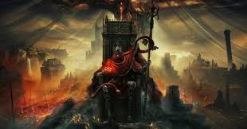
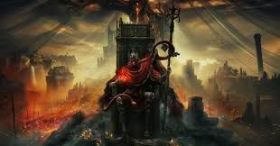

| DECOUVREZ CES JEUX | |
|---|---|
 |
Deltarune |
 |
Minecraft |
A travers ces vidéos,
vous pourrez déouvrir l'Univers de ces jeux mythiques !
Minecraft :
- Théorie
- LE LORE DE MINECRAFT ENTI7REMENT EXPLIQUEE
- LES FANTÔMES DU PASSÉ
- L’histoire perdue du Wither de Minecraft
- Gameplay
- DÉBUT DE L'AVENTURE POKÉMON MINECRAFT 2.0
- 1,000,000 Villager MANHUNT
- Apprendre à créer des farmes automatiques sur minecraft
- Speedrun